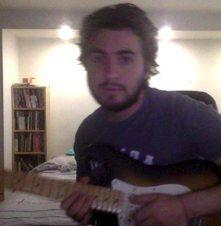

<ion-header>
  <ion-toolbar>
    <!-- Side menu button-->
    <ion-buttons slot="start">
      
      <button (click)="openFirst()"></button>
    </ion-buttons>

    <ion-title><ion-searchbar></ion-searchbar></ion-title>
  </ion-toolbar>
</ion-header>


<ion-tabs>

  <ion-tab-bar slot="bottom" color="light">
    <ion-tab-button tab="tab1">
      <ion-icon name="barcode"></ion-icon>
    </ion-tab-button>

    <ion-tab-button tab="tab2">
      <ion-icon name="keypad"></ion-icon>
    </ion-tab-button>

    <ion-tab-button tab="tab3">
      <ion-icon name="paper-plane"></ion-icon>
    </ion-tab-button>

    <ion-tab-button tab="tab4">
      <ion-icon name="text"></ion-icon>
    </ion-tab-button>

    <ion-tab-button tab="tab5">
      <ion-icon name="mail"></ion-icon>
    </ion-tab-button>
  </ion-tab-bar>


</ion-tabs>